Electronics / PCB
MSP430 Development Board
A custom MSP430FR2355 development board designed, assembled, and now undergoing hardware testing and firmware development.
Overview
I designed and assembled a custom development board based on the Texas Instruments MSP430FR2355 microcontroller. The project encompasses the hardware development process, from schematic design and component selection to PCB layout, fabrication, assembly, and hardware testing.
The board is designed to serve as a general-purpose embedded development platform while providing dedicated interfaces for magnetic position sensors and an external ESP32 module. It also includes accessible GPIO headers, programmable LEDs, push buttons, and an onboard switching power supply.
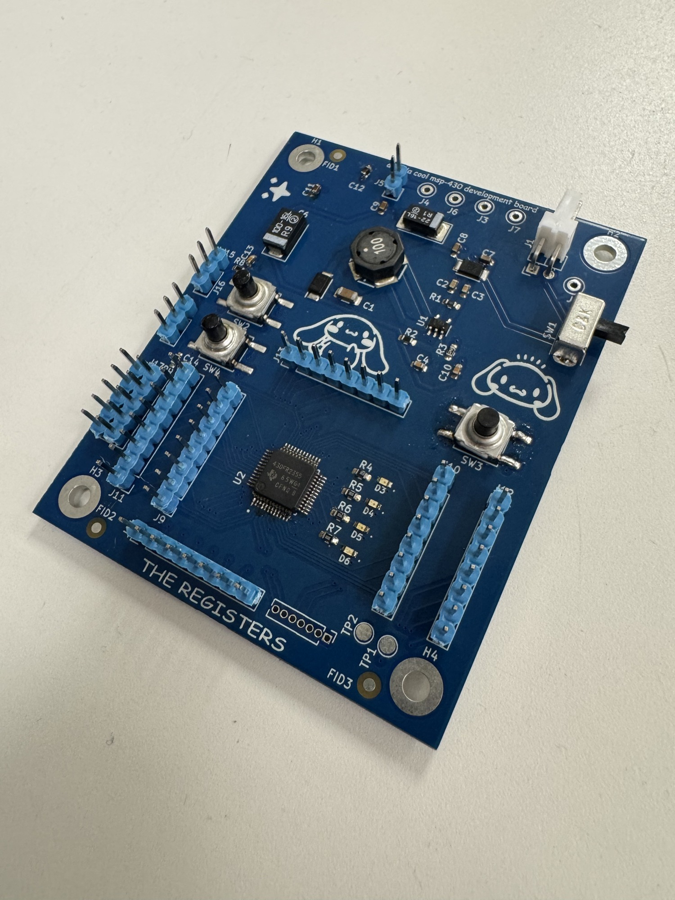
Schematic Design
I designed the board's schematic in KiCad, dividing the circuitry into hierarchical sheets for power management, microcontroller circuitry, and external interfaces. This organization separates the major functional blocks of the board and makes the design easier to navigate and debug.

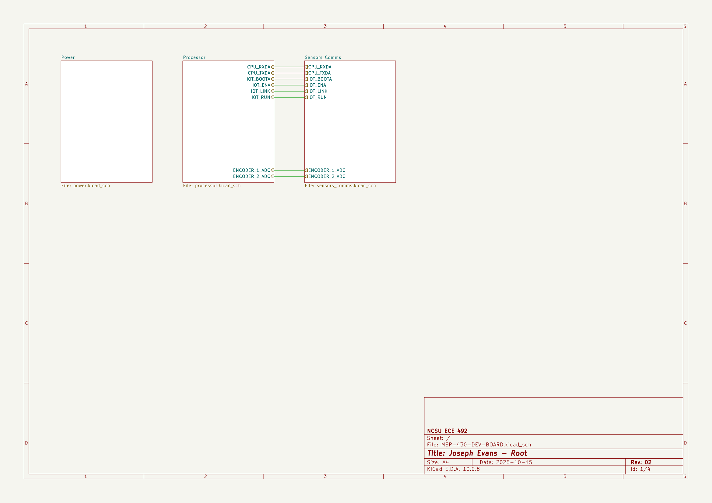
Power Supply
The board incorporates a switching power supply based on the LT1935 regulator in a SEPIC configuration. This topology allows the circuit to step the input voltage either up or down to provide a nominal 3.3 V supply.
The power circuitry includes a coupled inductor, reverse-polarity protection, input and output filtering capacitors, and a resistive feedback network. Several test points are distributed throughout the power supply to provide access to different stages of the circuit during hardware bring-up.

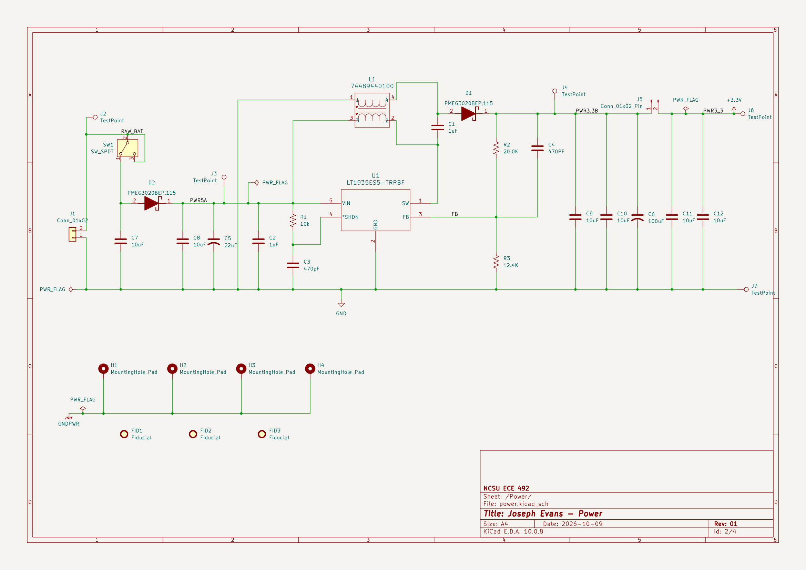
Microcontroller and GPIO
The board is built around the MSP430FR2355, a 16-bit microcontroller with integrated FRAM, timers, analog peripherals, and serial communication interfaces.
I routed the microcontroller's GPIO ports to external pin headers, allowing peripherals to be connected without modifying the PCB. The board also incorporates four programmable LEDs and three push buttons for interacting with and testing embedded applications.
A dedicated programming connector provides access to the microcontroller's Spy-Bi-Wire programming and debugging interface, along with UART communication signals.

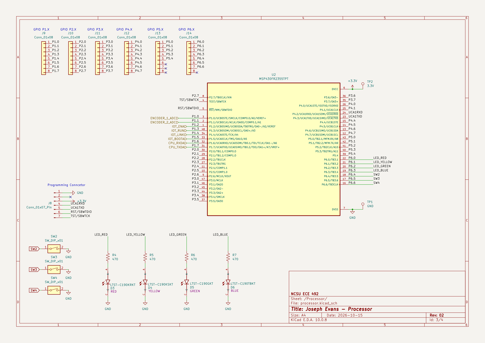
Peripheral Interfaces
In addition to general-purpose GPIO, I designed dedicated interfaces for two AS5600 magnetic position sensors. Each sensor interface includes an RC low-pass filter before the signal reaches the microcontroller's analog-to-digital converter.
Using a 1 kΩ resistor and a 150 nF capacitor, each filter has a nominal cutoff frequency of approximately 1.06 kHz. These filters are intended to attenuate high-frequency noise in the analog position measurements.
The board also includes a dedicated connector for an external ESP32 module, providing UART communication, power, and control signals. This allows the MSP430 to handle embedded processing and peripheral interaction while providing an interface for wireless connectivity through the ESP32.

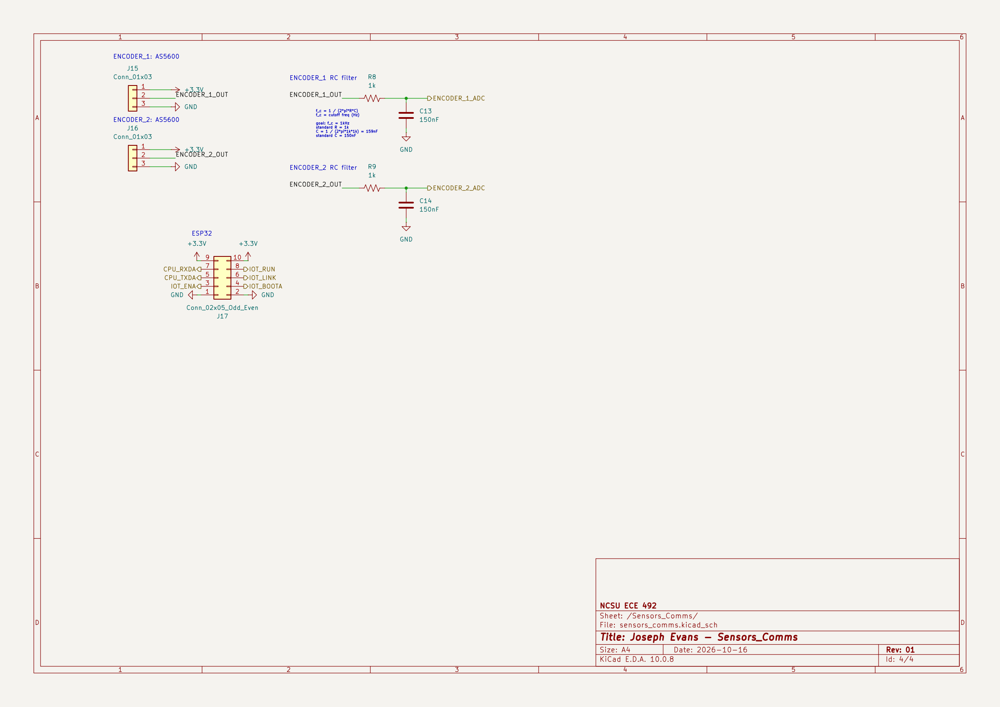
PCB Layout
After completing the schematic, I designed the PCB layout in KiCad. This involved assigning component footprints, arranging components, routing electrical connections, and organizing power and ground connections throughout the board.
The physical layout was designed around accessibility, with GPIO headers positioned along the edges of the board and user-facing components distributed across the board's surface. Mounting holes and electrical test points were also incorporated into the design.
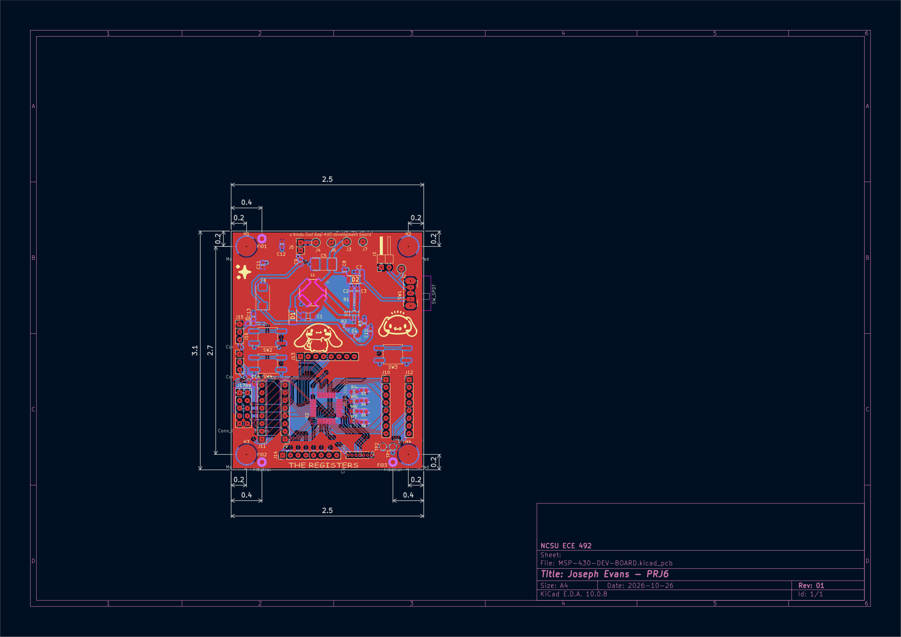
I used KiCad's 3D visualization tools to review component placement and the physical arrangement of the board before fabrication.
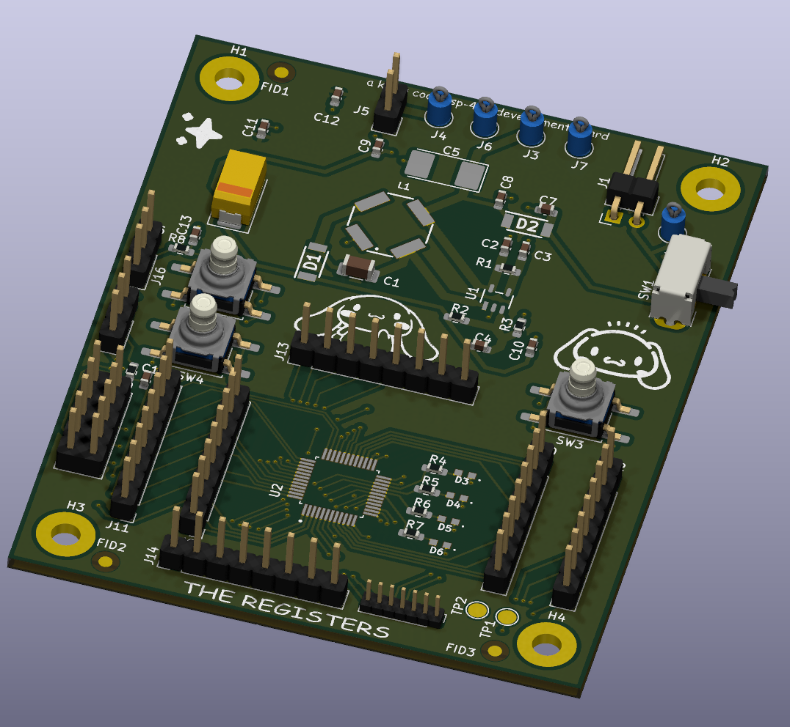
Fabrication and Assembly
After completing the PCB design, I had the boards fabricated and began assembling the components.
I soldered the surface-mount and through-hole components, including the microcontroller, power supply circuitry, passive components, connectors, LEDs, and switches.
Assembling the board provided hands-on experience translating a schematic and PCB layout into physical hardware, particularly when working with fine-pitch surface-mount components.
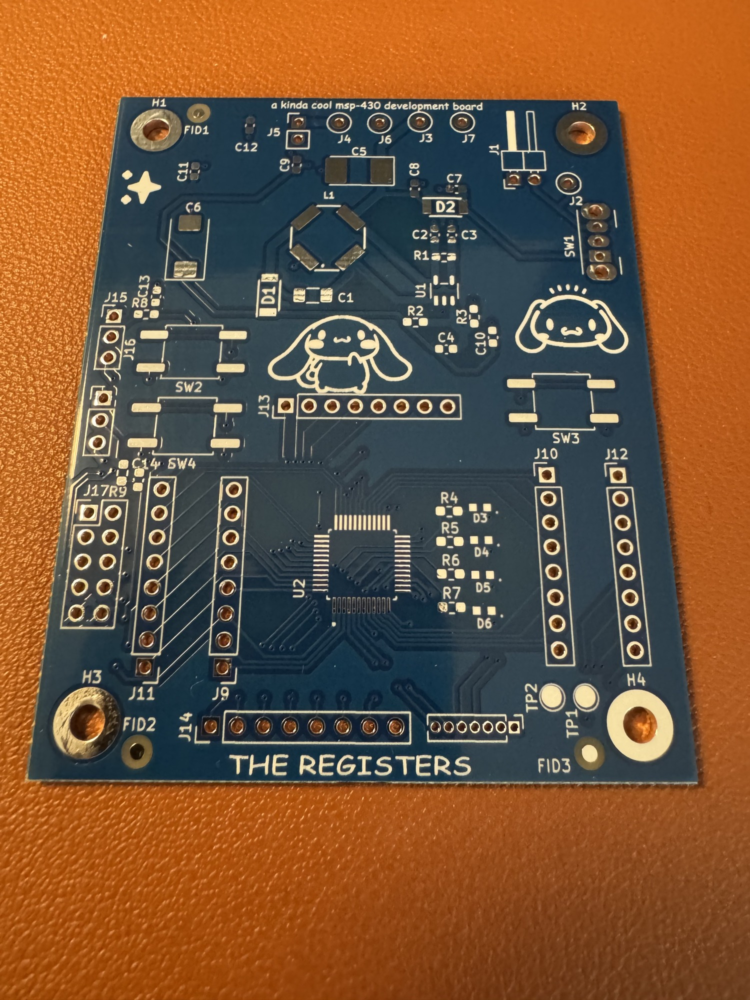
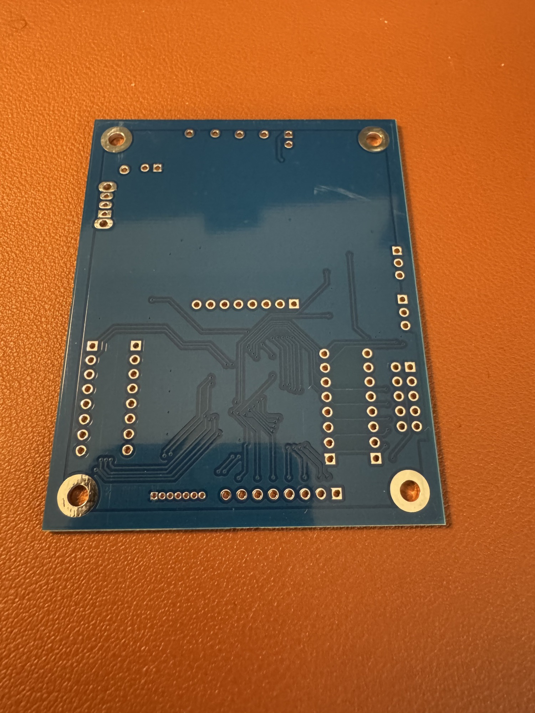
Rework
During assembly and bring-up, I inspected the MSP430's fine-pitch connections under a microscope and found a bent pin that needed correction. I carefully reworked the pin and touched up several solder joints to address connection issues and prepare the board for testing.
This repair work reinforced how important careful inspection and precise soldering are when assembling and debugging custom surface-mount hardware.
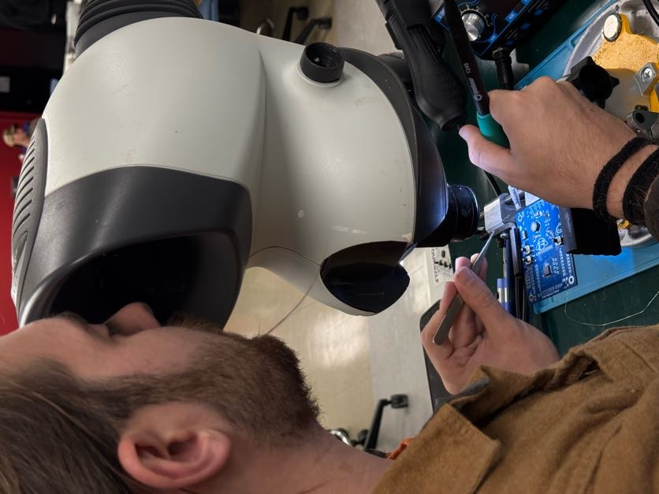
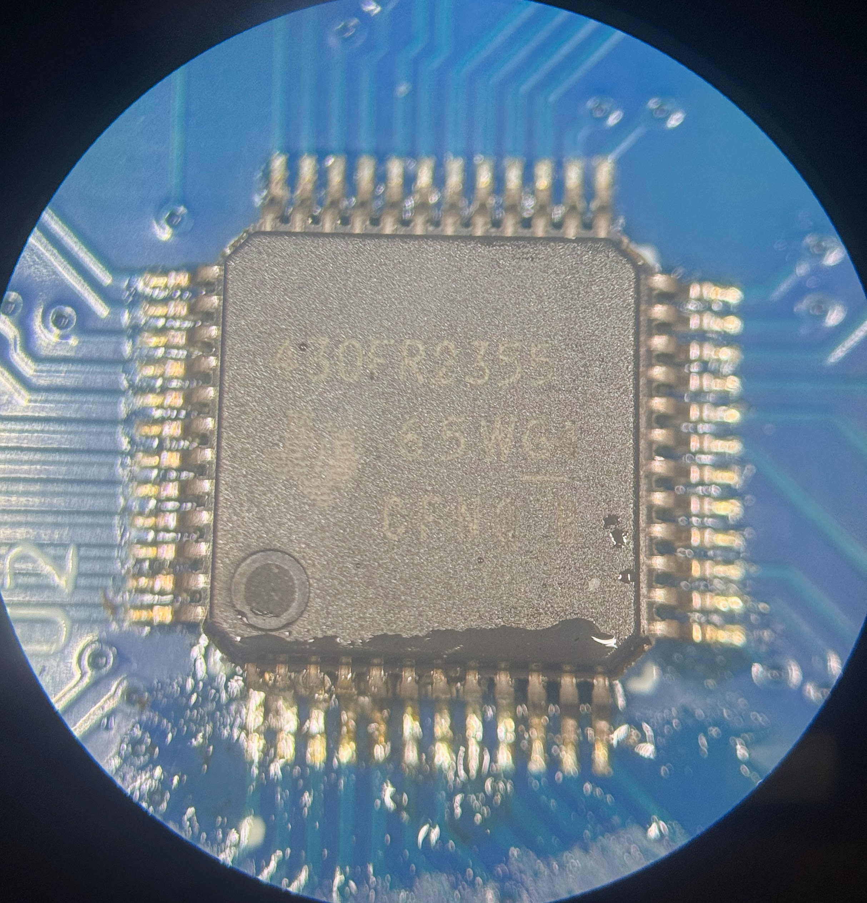
Hardware Testing and Firmware Development
I am currently bringing up the board and developing firmware for the MSP430. This involves verifying the power supply, checking electrical connections, establishing communication with the microcontroller, and testing the board's individual peripherals.
The remaining work focuses on validating the hardware and programming the microcontroller to exercise the board's different interfaces. This includes testing GPIO, onboard LEDs and switches, analog position sensor inputs, and serial communication.
The project has provided practical experience across both electrical hardware and embedded software development, including the process of debugging a custom embedded system rather than relying on an existing commercial development board.
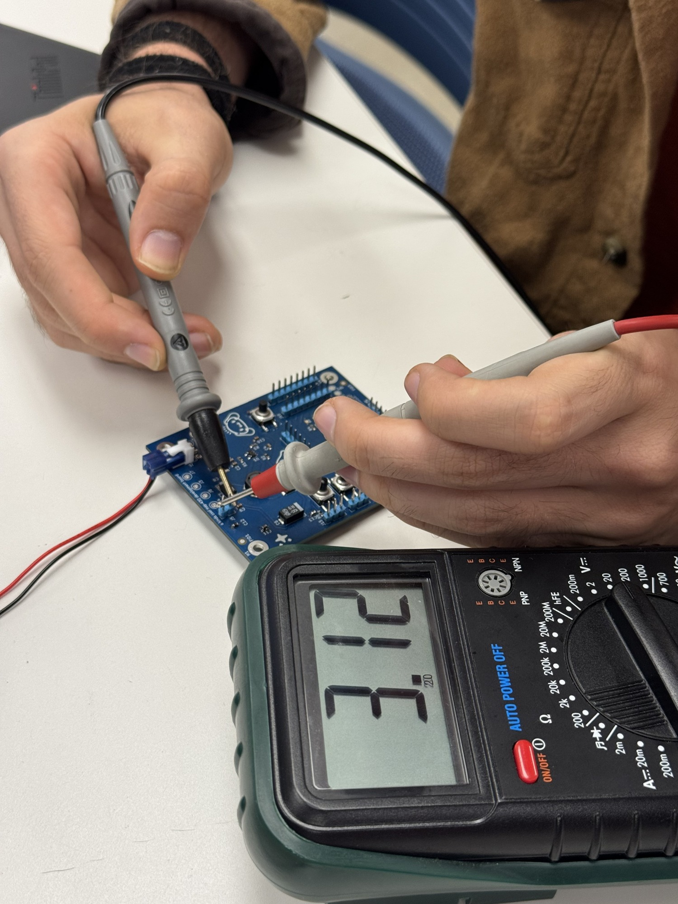